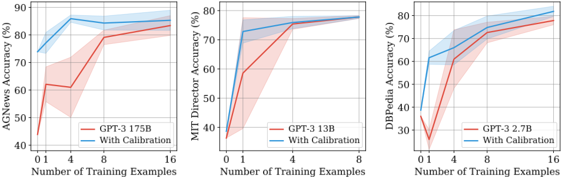
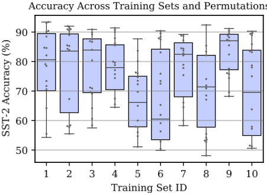
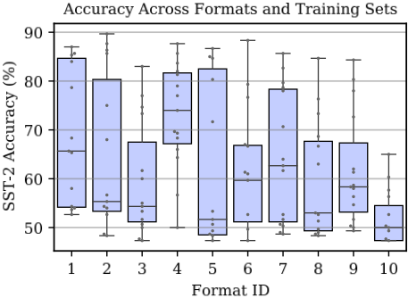
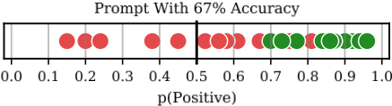
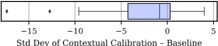
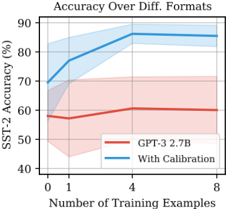
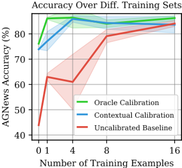
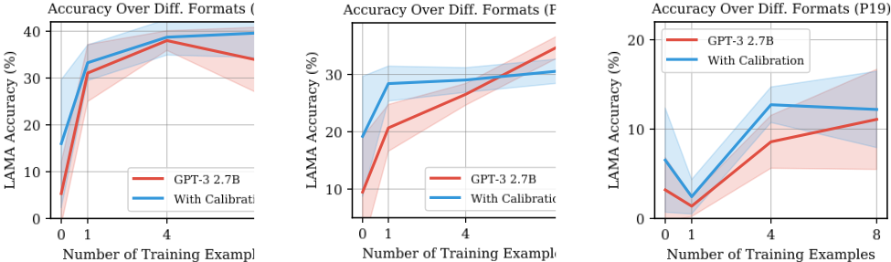

Calibrate Before Use: Improving Few-Shot Performance of Language Models
Calibrate Before Use：提升语言模型 Few-Shot 性能
简介
论文发现 GPT-3 的 few-shot in-context learning 高度不稳定：提示格式、训练示例的选择乃至排列顺序都会让准确率从接近随机（54.3%）波动到接近 SOTA（93.4%）。作者将这种不稳定性归因于三类偏差：majority label bias（偏向提示中出现频繁的答案）、recency bias（偏向提示末尾的答案）与 common token bias（偏向预训练数据中的高频词），三者通常表现为模型输出分布的整体偏移。据此提出 contextual calibration：用 'N/A'、'[MASK]'、空字符串等内容无关输入探测模型偏差，再以 W = diag(ˆp_cf)^-1 的对角仿射变换校正输出概率，使内容无关输入在各类答案上得分均匀。该方法在文本分类、LAMA 事实检索、ATIS/MIT Movies 槽位填充等任务上平均提升 GPT-3/GPT-2 准确率最高 30.0% 绝对值，显著降低跨提示方差，且只需数行代码、计算开销可忽略。对团队而言，这是提示工程与可靠使用的基础性结论：few-shot 效果对上下文组织极其敏感，输出校准是低成本高收益的稳定性手段。
问题
GPT-3 等 LLM 的 few-shot in-context learning 性能极不稳定：提示的格式、训练示例的选择与排列顺序都会导致准确率大幅波动（从接近随机到接近 SOTA），手动设计提示的用户无法稳定获得好结果。论文要定位造成波动的根因，并给出无需额外训练数据的修复方法。
方法
首先通过控制变量实验定位三类根因偏差：majority label bias、recency bias、common token bias，并指出三者通常表现为输出分布的整体偏移。随后提出 contextual calibration：向提示喂入内容无关测试输入（实验中对 'N/A'、'[MASK]'、空字符串三个输入的概率取平均），得到偏差分布 ˆp_cf，再取 W = diag(ˆp_cf)^-1、b = 0 的对角仿射变换（vector scaling）校正输出概率，使内容无关输入在各类答案上得分均匀；对生成任务只校准首个输出 token。实现仅需数行代码，计算开销可忽略。
关键结果
在 6 个文本分类数据集（SST-2、TREC、CB、RTE、AGNews、DBPedia）、LAMA 事实检索与 ATIS/MIT Movies 槽位填充上，contextual calibration 使 GPT-3 平均与最差情况准确率最高提升 30.0%（绝对值）
校准后的 GPT-3 2.7B 有时超过未校准的 GPT-3 175B baseline，最高领先 19.3%，尽管参数量小 50 倍以上
在多数任务上显著降低跨训练示例选择的准确率标准差，其余情况下也未明显增大方差
baseline 在 TREC、AGNews、DBpedia、SST-2 四个任务上出现 0-shot 到 1-shot 的准确率下降，校准消除了其中 3 个
SST-2（4-shot，GPT-3 2.7B）上仅改变示例排列，准确率即从 54.3% 波动到 93.4%；DBPedia 从 0-shot 到 1-shot 平均准确率由 36.0% 降至 25.9%
4-shot LAMA 上 50.2% 的预测重复某个训练答案（正确重复率 24.7%）；DBPedia 上 'book' 类预测频率是 'artist' 类的 11 倍，标签词频与预测率的相关系数 r=0.67
在 AGNews 上，无需训练数据的 contextual calibration 准确率接近用验证集调优的 'oracle calibration'；方法对 GPT-2 1.5B 同样开箱即用，说明该不稳定性是 LM 的普遍问题
创新点
与此前仅报告提示格式影响 masked LM 零样本表现的工作（LAMA、BERT probing 系列）不同，本文首次系统量化了无 finetuning 的 left-to-right LM 在 in-context learning 中训练示例选择与排列顺序的影响，并给出根因分析（三类偏差导致输出分布偏移）。方法上提出无需任何训练数据的 contextual calibration，用内容无关输入估计偏差，区别于需要验证集的统计校准（Platt scaling / vector scaling）与 finetuning 路线；并建议用 LLM 做 probing 的后续工作采用校准，以免低估模型真实准确率。
团队参考意义
相关度级别：high
命中能力域：3.2 提示工程 | 3.5 评测与可靠使用 | 3.1 上下文工程与记忆
理由：直接命中 3.2：论文核心就是 in-context learning 的提示构成（格式、示例、排列）敏感性分析与提示后处理技术，属于团队提示设计与提示词资产管理的必读基础。同时命中 3.5：目标是让 LLM 使用更稳定可靠、降低对人工提示工程的依赖，并给出小模型加校准替代大模型的成本效率证据，以及'评测必须控制跨提示方差'的方法论警示。其对示例选择与顺序如何影响上下文效果的量化分析，也为 3.1 的结构化上下文组织提供直接依据。团队在构建 few-shot 提示模板、内部评测流程与线上自动化任务时，若不考虑论文揭示的方差与偏差问题，评测结论和线上效果都不可信。
建议动作：深入精读并做内部分享
中文全文
arXiv:2102.09690v2 [cs.CL] 2021年6月10日
Calibrate Before Use: Improving Few-Shot Performance of Language Models
Tony Z. Zhao * 1 Eric Wallace * 1 Shi Feng 2 Dan Klein 1 Sameer Singh 3
Abstract
当提供包含少量训练样本的自然语言提示（prompt）时，GPT-3 能够执行众多任务。我们表明，这种少样本学习（few-shot learning）可能是不稳定的：提示格式、训练样本的选择，甚至训练样本的顺序，都可能导致准确率从接近随机水平波动到接近最先进水平。我们证明，这种不稳定性源于语言模型偏向预测某些答案的偏差，例如那些位于提示末尾附近的答案，或在预训练数据中常见的答案。为了缓解这一问题，我们首先通过在给定训练提示和一个无内容测试输入（如 ' N/A '）时询问模型的预测，来估计模型对每个答案的偏差。然后，我们拟合校准参数，使模型对该输入的预测在各答案之间呈均匀分布。在多样化的任务集合上，这种上下文校准（contextual calibration）方法显著提升了 GPT-3 和 GPT-2 的平均准确率（绝对提升高达 30.0%），并降低了因提示选择不同而产生的方差。
1. Introduction
小样本学习（few-shot learning）——即通过有限的示例来学习任务的能力——是智能的一个重要方面（Lake et al., 2015; Yogatama et al., 2019）。近期的研究表明，大型神经语言模型无需微调即可执行小样本学习（Radford et al., 2019; Brown et al., 2020）。具体而言，GPT-3（Brown et al., 2020）在自然语言提示（prompt）中给出少量示例时，便可以完成众多任务。例如，要执行情感分析，可以用如下提示对 GPT-3 进行条件化：
* 同等贡献 1 加州大学伯克利分校（UC Berkeley） 2 马里兰大学（University of Maryland） 3 加州大学欧文分校（UC Irvine）。通讯作者：Eric Wallace < ericwallace@berkeley.edu > 。
其中，前两行对应两个训练示例，最后一行是测试示例。在进行预测时，模型会预测紧随其后的词元（token）更可能是单词 'Positive' 还是 'Negative'。
这种小样本“上下文”学习（in-context learning）方式之所以有趣，是因为它表明模型无需更新参数即可进行学习。更重要的是，与如今标准的微调方法相比，它具有众多实用优势（Radford et al., 2018; Devlin et al., 2019）。首先，它使从业者能够“快速原型化”自然语言处理（NLP）模型：改变提示即可立即得到一个新模型。其次，它为机器学习模型提供了一个完全自然语言的接口，使得用户——即使不具备技术专长——也能够创建 NLP 系统。最后，由于上下文学习针对每个任务复用同一个模型，因此在服务众多不同任务时，它降低了内存需求和系统复杂性。
然而，尽管有这些前景，我们表明 GPT-3 的准确率在不同提示之间可能高度不稳定（第 3 节）。一个提示包含三个组成部分：格式、一组训练示例，以及这些示例的排列（顺序）。我们表明，对这些因素的不同选择会导致差异极大的准确率，例如，在情感分析提示中改变训练示例的排列，可使准确率从接近随机水平（54%）变为接近最先进水平（93%）。这种不稳定性意味着，通常手动设计提示的 GPT-3 用户无法指望始终获得良好的准确率。
接下来，我们分析这种不稳定性的成因。我们识别出语言模型的三个陷阱，它们导致语言模型在小样本学习过程中偏向某些答案。具体而言，语言模型受到多数标签偏差（majority label bias）、近因偏差（recency bias）和常见词元偏差（common token bias）的影响（第 4 节）。多数标签偏差和近因偏差会使模型倾向于预测那些出现频繁或位于提示末尾附近的训练答案。例如，一个以 Negative 训练示例结尾的提示可能会导致偏向 Negative 类别。另一方面，常见词元偏差会使模型偏好在其预训练数据中频繁出现的答案，例如，它会偏好 'United States' 而非 'Saint Lucia'，而这对于目标任务而言很可能是次优的。
我们发现，这些偏差通常会导致模型输出分布发生偏移。因此，我们可以通过对输出分布进行“校准”来抵消这些偏差。具体而言，我们通过输入一个无内容的虚拟测试输入来估计模型对某些答案的偏差。例如，在上面的提示中，如果将 'Amazing.' 替换为字符串 'N/A'，模型会预测 62% 为 Positive。随后，我们拟合校准参数，使该无内容输入对每个答案的得分呈均匀分布。这一上下文校准过程无需额外的训练数据，即可为校准参数提供良好的设置。

我们在一系列任务上测试了上下文校准的有效性（第 5 节）。在不同的提示格式和示例选择下，上下文校准始终能够提升 GPT-3 和 GPT-2 的准确率（绝对提升高达 30.0%）（例如图 1）。它还使准确率在不同提示之间更加稳定，从而减少了对提示工程的需求。总体而言，上下文校准是一种简单的方法，能让语言模型成为更好的少样本学习者：它使最终用户能够以少得多的精力获得更高的准确率。
2. Background and Experimental Setup
神经自回归语言模型（Language Model, LM）以词元（token）序列作为输入，并输出关于下一个词元的概率分布。大型神经 LM 能够通过上下文学习（in-context learning）以零样本或少样本的方式执行任务（Radford et al., 2019; Brown et al., 2020）。为此，需要向模型输入一个自然语言提示（prompt）。该提示包含三个组成部分：一种格式、一组训练示例，以及训练示例的一个排列（顺序）。
提示格式 提示格式是一个模板，由用于训练示例和测试示例的占位符以及可能包含的任务自然语言描述组成。例如，第 1 节中提示的格式是一个具有如下样式的模板：'Input:' input 'Sentiment:' label 。还存在许多其他可选格式，例如，可以将该任务表述为问答任务。
提示训练示例 提示中的训练示例用于教会 LM 如何解决当前任务。来自第 1 节的提示包含两个训练示例；我们将其称为“两样本”（two-shot）学习。我们还考虑“零样本”（zero-shot）学习，即不包含任何训练示例的情况。
训练示例排列 当使用训练示例时，它们具有某种特定的排列，例如，在来自第 1 节的提示中，'Subpar acting' 示例排在最前面。排列之所以重要，是因为神经语言模型以从左到右的方式更新其隐藏状态。
为了对某个输入进行预测，我们将其填入测试占位符并从 LM 进行生成。例如，参见来自第 1 节的提示中的 'Amazing.' 测试示例。对于生成任务，我们从 LM 进行贪心生成，直到其产生一个换行符。对于分类任务，每个类别的概率由分配给其关联标签名称的概率给出，例如，对于情感分类，即为 'Negative' 和 'Positive' 这两个词。
2.1. Datasets and Prompt Formats
我们使用三个任务的数据集：文本分类、事实检索和信息抽取。除非另有说明，我们对每个数据集使用固定的提示格式。我们在附录 B 中展示了每个数据集的格式和示例。
文本分类 我们使用六个数据集研究文本分类：使用 SST-2 (Socher et al., 2013) 进行情感分析，使用 TREC (Voorhees &Tice, 2000) 进行 6 类问题分类，使用来自 SuperGLUE (Wang et al., 2019) 的 3 类 CB (de Marneffe et al., 2019) 和二分类 RTE (Dagan et al., 2005) 进行文本蕴含，以及使用 4 类 AGNews (Zhang et al., 2015) 和 14 类 DBPedia (Zhang et al., 2015) 数据集进行主题分类。第 1 节中的提示展示了情感分析任务的一个示例。

事实检索 我们使用 LAMA (Petroni et al., 2019) 评估事实检索。该数据集由知识库三元组组成，这些三元组被填入缺少宾语的模板中，例如 'Obama was born in'。我们将这些模板用作我们的提示，并移除缺失答案不在模板末尾的关系（从左到右的 LM 无法解决这些问题）。答案始终是单个 token，我们报告所有三元组上的平均准确率。
信息抽取 我们使用两个槽位填充（slot filling）数据集来研究信息抽取：ATIS (Hemphill et al., 1990) 和 MIT Movies trivia10k13 (Liu et al., 2012)。我们为每个数据集使用两个随机选取的槽位：ATIS 使用航空公司（airline）和出发日期（departure date），MIT Movies 使用导演姓名（director name）和电影类型（movie genre）。两个数据集的答案都是输入中的一个文本片段，例如，ATIS 的 airline 任务是在给定句子 'list a flight on american airlines from toronto to san diego' 时预测 'american airlines'。我们使用模型生成输出与真实片段（ground-truth span）之间的精确匹配（Exact Match）作为评估指标。
2.2. Model Details
我们在三个规模的 GPT-3（2.7B、13B 和 175B 参数）以及 GPT-2（1.5B 参数）上运行实验。我们通过 OpenAI API 访问 GPT-3。我们发布了用于复现实验的代码。1
1 https://www.github.com/tonyzhaozh/few-shot-learning

3. Accuracy Varies Highly Across Prompts
This section studies how GPT-3's accuracy changes as we vary each aspect of the prompt (training examples, permutation, format). We focus on a subset of the datasets to simplify our analysis; in Section 5 we show that our findings hold across all of the datasets we study.
GPT-3's accuracy depends highly on both selection and permutation of training examples. Concretely, we use a fixed prompt format and choose different random sets of training examples. For each set of training examples, we evaluate the accuracy for all possible permutations.
Figure 2 shows the results for SST-2 (4-shot, GPT-3 2.7B). Surprisingly, varying the permutation can be as important, or even more important, than which training examples are chosen. For example, varying the permutation of the training examples can cause accuracy to go from near chance (54.3%) to near state-of-the-art (93.4%). For a qualitative example of the sensitivity to permutations, see Table 2 in Appendix A. This high importance on example order is in contrast to standard machine learning, where the ordering of examples during training is typically an afterthought.
The variance persists with more data and larger models.
向提示中添加更多训练示例并不一定能降低准确率的方差。我们在图1中针对三个不同的数据集对训练示例的数量进行了扫描（红色曲线）。即使使用16个训练示例，方差依然很高。此外，添加更多训练示例有时反而会损害准确率（例如，对于DBPedia，从0-shot变为1-shot时，平均准确率从36.0%降至25.9%）。在使用更大的模型时，准确率的方差同样可能保持较高水平，例如图1的左侧。
![Figure 4. Majority label and recency biases cause GPT-3 to become biased towards certain answers and help to explain the high variance across different examples and orderings. Above, we use 4-shot SST-2 with prompts that have different class balances and permutations, e.g., [P P N N] indicates two positive training examples and then two negative. We plot how often GPT-3 2.7B predicts Positive on the balanced validation set. When the prompt is unbalanced, the predictions are unbalanced ( majority label bias ). In addition, balanced prompts that have one class repeated near the end, e.g., end with two Negative examples, will have a bias towards that class ( recency bias ).](assets/a516/figures/fig_4.png)
GPT-3's accuracy depends highly on prompt format.
We next keep the set of training examples and permutations fixed but vary the prompt format. We focus on SST-2, and we manually design an additional 14 prompt formats. The formats include question-answer templates, conversationstyle templates, prompts that resemble Web pages, and variations on the label names (all formats available in Table 7 in Appendix B). The accuracy for ten of the formats is shown in Figure 3. We find that some of the formats are better than others on average. However, all of the formats still suffer from high variance across different training sets.
4. What Causes the High Variance?
接下来，我们分析为什么 GPT-3 的准确率会随不同的训练样本、排列方式和提示格式而变化。具体而言，我们证明这种方差源于语言模型（LMs）在输出答案时的以下偏向：(1) 偏向提示中频繁出现的答案（多数标签偏差，majority label bias）；(2) 偏向位于提示末尾附近的答案（近因偏差，recency bias）；(3) 偏向预训练数据中常见的答案（常见词元偏差，common token bias）。
**多数标签偏差（majority label bias）** 我们发现，GPT-3 偏向于那些在提示中频繁出现的答案。一个简单的情况是文本分类提示存在类别不平衡，例如 Positive 情感样本多于 Negative 情感样本。图 4 的"unbalanced"区域展示了这一点：当某一类别更常见时，GPT-3 2.7B 会强烈偏向于预测该类别。由于 SST-2 情感分析数据集是平衡的，这种偏差会导致准确率大幅下降。多数标签偏差也解释了为什么我们经常观察到从 0-shot 转到 1-shot 时准确率下降——我们发现，这一下降是由于模型频繁重复那一个训练样本的类别。
多数标签偏差也出现在生成任务中。在使用 GPT-3 2.7B 的 4-shot LAMA 验证集上，模型预测中有 50.2% 是对四个训练答案之一的重复（而正确的重复率应为 24.7%）。总体而言，多数标签偏差有助于解释为什么训练样本的不同选择会严重影响 GPT-3 的准确率——它会使模型预测的分布发生偏移。
**近因偏差（recency bias）** 模型的多数标签偏差会被其近因偏差加剧，即倾向于重复出现在提示末尾附近的答案。图 4 的"balanced"区域展示了这一点。例如，当两个 Negative 样本出现在末尾时（P P N N），模型会强烈偏好 Negative 类别。此外，近因偏差可能盖过多数标签偏差，例如，"P P P N"训练集会导致近 90% 的预测为 Negative，尽管训练样本中有 3/4 是 Positive。
近因偏差同样影响生成任务。对于 4-shot LAMA，越靠近提示末尾的训练答案越有可能被模型重复。具体来说，模型对来自第 1、2、3、4 个训练样本的答案分别“过度预测”了 8.5%、8.3%、14.3% 和 16.1%。² 总体而言，近因偏差有助于解释为什么训练样本的排列很重要——样本的顺序会严重影响模型预测的分布。
**常见词元偏差（common token bias）** 最后，我们发现 GPT-3 偏向于输出在其预训练分布中常见的词元（token），而这对于下游任务的答案分布来说很可能是次优的。一个简单的例子出现在 LAMA 事实检索数据集上：当真实答案其实是一个罕见实体时，模型却经常预测出诸如"America"这样的常见实体。
在文本分类任务中，常见词元偏差（common token bias）会出现一种更为细微的情形。回顾一下，模型是通过生成与每个类别相关联的标签名称来进行预测的。由于某些标签名称在预训练数据中出现得更为频繁，模型会天然地偏向于预测某些类别。例如，在 DBPedia（一个类别均衡的 14 类主题分类数据集）上，GPT-3 预测 'book' 类别的频率是 'artist' 类别的 11 倍。事实上，DBPedia 标签名称的出现频率与 GPT-3 预测其对应类别的比率之间存在中等程度的相关性（r = 0.67）。³ 总体而言，常见词元偏差有助于解释为什么标签名称的选择十分重要，以及为什么模型在罕见答案上表现不佳。
² 在所有关系以及三组不同的训练示例上，模型重复训练示例的比率分别为 20.7%、19.8%、29.9% 和 26.8%。真实重复率（ground-truth repeat rate）分别为 12.2%、11.5%、15.6% 和 10.7%。我们将“过度预测”（overpredicts）定义为模型的重复率减去真实重复率。
**偏差对模型预测的影响** 我们发现，上述三种偏差的最终结果通常只是模型输出分布发生一个简单的偏移。例如，图 5 针对一个 SST-2 情感提示（prompt）可视化了这种偏移。

图 5 中所用的提示与模型固有的偏差，使其频繁地对 Positive 类别给出高置信度的预测。由于预测时使用的是默认的 50% 阈值，这导致频繁出现假阳性。值得注意的是，如果我们能够最优地设置分类阈值（在此例中为 p(Positive) = 0.68），该分类器将具有很高的准确率（在验证集上为 94%）。
5. Contextual Calibration
到目前为止，我们已经表明，由于提示以及模型自身的固有偏差，GPT-3 会偏向于某些答案。在这里，我们试图通过对模型的输出概率进行“校准”来纠正这一问题。4 调整输出概率的一种常用技术是应用仿射变换（affine transformation）（Platt, 1999; Guo et al., 2017）：
其中，对原始概率 ˆ p 应用权重矩阵 W 和偏置向量 b，从而得到新的概率
3 词元（token）在网络上的频率是使用 Google Ngrams https://books.google.com/ngrams 计算的。预测结果来自验证集上的 0-shot 设置。
4 GPT-3 的输出存在偏差（其输出发生了偏移），这类似于电压表或天平等测量设备存在偏差的情况。正如这些设备需要“使用前校准”——即对设备的输出进行缩放/调零——我们希望对语言模型（LM）应用类似的校准过程。这一目标不同于统计校准（statistical calibration）（Brier, 1950; Guo et al., 2017），
即，使模型的置信度估计与其真实准确率保持一致。
ˆ q。5 对于分类任务，ˆ p 是与每个标签名称相关联的概率集合，并重新归一化为 1。对于生成任务，ˆ p 是第一个词元的全部概率集合。6 在本文中，我们将矩阵 W 限制为对角矩阵，这被称为向量缩放（vector scaling）（Guo et al., 2017），以防止参数数量随 ˆ p 的大小呈二次增长（对于生成任务，其大小 ≈ 50,000）。
零样本（zero-shot）或少样本（few-shot）设置的主要挑战在于，我们没有数据来学习 W 和 b。因此，我们提出了一种新颖的无数据（data-free）过程来推断这些参数的良好设置。其关键思想是，模型对某些答案的偏差可以通过输入诸如字符串 'N/A' 这样的无内容（content-free）输入来估计。例如，考虑以下二样本（two-shot）提示：
其中 'N/A' 作为测试输入。理想情况下，GPT-3 会将此测试输入评为 50% Positive 和 50% Negative。然而，模型的偏差使其将该输入评为 61.8% Positive。请注意，这一误差是上下文相关的（contextual）：训练示例、排列和格式的不同选择将导致对无内容输入的不同预测。
我们可以通过设置 W 和 b，使得无内容输入的类别得分均匀分布，从而纠正这一误差。我们首先获得无内容输入的 ˆ p，记作 ˆ p cf。随后，我们令 W = diag ( ˆ p cf ) - 1，并将 b 设为全零向量。7 在进行测试预测时，我们计算 Wˆ p + b 并取 argmax。
实现细节 这一上下文校准（contextual calibration）过程仅增加极少的计算开销，并且只需几行代码即可实现（计算并保存 ˆ p cf ，调整输出概率）。对于无内容输入（content-free input），存在许多不错的选择，包括 'N/A'、空字符串以及无意义词元。在我们所有的实验中，我们对来自三个无内容输入的概率取平均：'N/A'、'[MASK]' 和空字符串。8 也可以以任务特定的方式来构造无内容输入。我们在 LAMA 上探索了这种做法，即将主语替换为无内容输入，例如，我们使用 'N/A was born in' 作为输入。
5 这一仿射变换通常应用于 logits，即在 softmax 之前。然而，在 OpenAI API 中我们只能获取 GPT-3 的输出概率。
6 对于生成任务，我们只校准第一个输出词元的预测。这是合理的，因为对于我们考虑的任务，我们发现模型在生成第一个词元之后的预测具有高度确定性。
7 一种替代方案是将 b 设为 - ˆ p cf ，并将 W 设为单位矩阵。从经验上看，这种替代方案在生成任务（其中 ˆ p 的维度较大）上能带来更高的准确率。正文中的方案则在分类任务上表现更好。
8 我们发现这种简单的集成（ensemble）在 AGNews 上取得了最佳结果，因此我们将其复用于所有其他数据集。关于无内容输入选择的消融实验，请参见第 5.2 节。
| Dataset.Dataset | LM.LM | 0-shot.Baseline | 0-shot.Ours | 1-shot.Baseline | 1-shot.Ours | 4-shot.Baseline | 4-shot.Ours | 8-shot.Baseline | 8-shot.Ours |
|---|---|---|---|---|---|---|---|---|---|
| Text Classification | Text Classification | Text Classification | Text Classification | Text Classification | Text Classification | Text Classification | Text Classification | Text Classification | Text Classification |
| AGNews | 2 . 7 B 175 B | 44 . 7 0 . 0 43 . 9 0 . 0 | 63.2 0 . 0 73.9 0 . 0 | 33 . 0 5 . 1 62 . 1 6 . 3 | 59.6 6 . 4 77.1 3 . 8 | 43 . 3 8 . 3 61 . 0 10 . 9 | 71.1 8 . 5 85.9 1 . 3 | 50 . 8 7 . 8 79 . 1 2 . 6 | 72.7 5 . 8 84.3 2 . 5 |
| TREC | 2 . 7 B 175 B | 31 . 0 0 . 0 47 . 4 0 . 0 | 38.8 0 . 0 57.4 0 . 0 | 24 . 3 6 . 4 57 . 7 6 . 0 | 36.8 7 . 7 75.7 1 . 4 | 25 . 8 11 . 5 60 . 2 7 . 6 | 38.6 13 . 2 69.7 1 . 4 | 29 . 3 8 . 0 45 . 6 4 . 0 | 44.3 11 . 4 66.9 6 . 5 |
| CB | 2 . 7 B 175 B 2 . 7 B | 44 . 6 0 . 0 30 . 4 0 . 0 44 . 8 0 . 0 | 50.0 0 . 0 48.2 0 . 0 49.5 0 . 0 | 33.8 16 . 6 50 . 9 6 . 7 49 . 6 2 . 9 | 33 . 0 7 . 3 51.8 7 . 2 50.4 2 . 7 | 43 . 5 11 . 9 45 . 2 19 . 4 44 . 0 1 . 4 | 54.2 4 . 7 60.7 6 . 7 54.5 4 . 7 | 43 . 9 8 . 4 59 . 6 11 . 3 49 . 2 1 . 9 | 53.0 7 . 7 65.0 7 . 9 54.8 2 . 8 |
| RTE SST-2 | 175 B 2 . 7 B 175 B | 57.8 0 . 0 57 . 2 0 . 0 71 . 6 0 . 0 | 57.8 0 . 0 71.4 0 . 0 75.8 0 . 0 | 62.9 2 . 7 67 . 3 7 . 9 93 . 3 2 . 8 | 62 . 8 2 . 3 79.1 8 . 3 94.7 1 . 4 | 58 . 7 11 . 9 59 . 1 10 . 2 93 . 6 3 . 3 | 60.4 8 . 1 79.9 7 . 8 94.3 1 . 0 | 66.2 5 . 8 54 . 0 4 . 3 95.6 1 . 0 | 65 . 5 2 . 5 82.0 5 . 5 95 . 3 0 . 7 |
| 2 . 7 B 175 B | 36 . 0 0 . 0 22 . 0 0 . 0 | 38.7 0 . 0 59.7 0 . 0 | 25 . 9 4 . 4 79 . 3 3 . 0 | 61.6 2 . 9 85.3 2 . 2 | 61 . 0 12 . 8 84 . 6 5 . 8 | 66.0 7 . 5 86.9 4 . 0 | 72 . 6 4 . 5 82 . 3 7 . 8 | 74.8 5 . 0 86.9 1 . 9 | |
| DBPedia | |||||||||
| Fact Retrieval | Fact Retrieval | Fact Retrieval | Fact Retrieval | Fact Retrieval | Fact Retrieval | Fact Retrieval | Fact Retrieval | Fact Retrieval | Fact Retrieval |
| LAMA | 2 . 7 B 175 B | 14 . 0 0 . 0 23 . 5 0 . 0 | 22.7 0 . 0 30.1 0 . 0 | 29 . 7 1 . 8 48 . 9 2 . 3 | 31.6 1 . 3 49.0 1 . 4 | 35 . 8 3 . 8 62.0 2 . 4 | 37.4 3 . 4 61 . 8 2 . 9 | 42.5 1 . 3 63.8 1 . 0 | 42.5 1 . 4 63 . 6 1 . 3 |
| Information Extraction | Information Extraction | Information Extraction | Information Extraction | Information Extraction | Information Extraction | Information Extraction | Information Extraction | Information Extraction | Information Extraction |
| MIT-G | 2 . 7 B 13B | 5 . 0 0 . 0 15 . 0 0 . 0 | 5.7 0 . 0 18.7 0 . 0 | 26 . 7 11 . 4 47 . 3 3 . 9 | 37.9 5 . 7 52.0 7 . 9 | 53 . 1 7 . 8 57 . 9 4 . 8 | 54.7 6 . 0 58.9 4 . 0 | 59 . 0 4 . 7 59 . 0 4 . 7 | 59.1 4 . 8 59.1 4 . 8 |
| MIT-D | 2 . 7 B 13B | 46 . 3 0 . 0 36 . 3 0 . 0 10 . 8 0 . 0 | 47.0 0 . 0 38.7 0 . 0 | 42 . 0 13 . 0 58 . 6 21 . 4 | 53.5 13 . 5 72.8 4 . 0 | 73 . 5 4 . 9 75 . 4 1 . 9 43 . 0 26 . 2 | 74.1 5 . 0 75.9 2 . 1 | 75.3 1 . 0 77.8 0 . 5 | 75 . 1 1 . 3 77.8 0 . 5 |
| ATIS-A | 2 . 7 B 13B | 49 . 5 0 . 0 | 14.0 0 . 0 52.7 0 . 0 | 29 . 8 12 . 8 69 . 6 17 . 4 | 33.1 9 . 4 71.8 17 . 1 | 67 . 5 10 . 4 | 47.3 21 . 3 69.6 13 . 4 | 55 . 6 5 . 0 63 . 4 4 . 6 | 58.8 4 . 0 64.5 4 . 0 |
| 42 . 3 28 . 8 | 81 . 0 8 . 8 | ||||||||
| ATIS-D | 2 . 7 B 13B | 6 . 4 0 . 0 4 . 0 0 . 0 | 12.9 0 . 0 5.0 0 . 0 | 97.9 0 . 6 | 65.6 20 . 8 95 . 5 4 . 6 | 75 . 0 6 . 7 98.0 0 . 6 | 83.4 4 . 2 97 . 8 0 . 7 | 98.8 0 . 3 | 88.3 3 . 7 98.8 0 . 3 |
| Dataset.Dataset | LM.LM | 0-shot.Baseline | 0-shot.Ours | 1-shot.Baseline | 1-shot.Ours | 4-shot.Baseline | 4-shot.Ours | 8-shot.Baseline | 8-shot.Ours |
表 1. 上下文校准在一系列任务上提升了准确率。我们展示了在不同训练示例选择下的均值与标准差（提示格式保持固定）。语言模型（LM）列表示 GPT-3 的规模（GPT-2 的结果见附录 A）。Baseline 列展示了贪心解码（greedy decoding）的标准方法（Brown et al., 2020），而 Ours 对应于使用上下文校准修改输出概率后的贪心解码。我们对 baseline 与 ours 中较好的结果进行了加粗。MIT-G、MIT-D、ATIS-A 和 ATIS-D 分别表示 MIT Genre、MIT Director、ATIS Airline 和 ATIS Departure Date 数据集。
5.1. Results for Contextual Calibration
在本节中，我们在所有数据集和语言模型（LM）上评估上下文校准（contextual calibration）的有效性。我们首先使用固定的提示格式，并选取五组不同的随机训练样本，以任意顺序放入提示中。对于分类任务，我们不人为地平衡训练样本的标签。对于基线（不使用校准的标准解码）和上下文校准，我们使用相同的训练样本集合。我们使用的标注预算为 0-8 个样本；使用超过 8 个样本会导致查询 OpenAI API 的成本变得极其昂贵。
表 1 给出了结果，第 1 节中的图 1 绘制了其中一部分任务的相同数据。
提升平均与最差情况准确率 上下文校准显著提升了 GPT-3 的平均准确率与最差情况准确率，绝对提升最高达 30.0%。这些增益在分类任务和生成任务上均成立。上下文校准有时还能使 GPT-3 2.7B 超越 GPT-3 175B 基线——最高超出 19.3%——尽管其规模小了 50 倍以上。
可降低跨训练集的方差 图 6 绘制了表 1 中所有任务在基线与上下文校准之间标准差的差异。在大多数情况下，上下文校准大幅降低了方差，而在其余情况下，它也没有使方差增加太多。
减少从 0-shot 到 1-shot 的准确率下降 对于基线，有四个案例在从 0-shot 转向 1-shot 时出现了准确率下降（TREC、AGNews、DBpedia、SST-2）。我们将这一下降归因于多数标签偏差（majority label bias，见第 4 节的讨论）。校准在四个案例中的三个中消除了这一下降。

提升 GPT-2 我们还测试了 GPT-2 1.5B（见附录 A 中的表 4）。我们发现，与 GPT-3 一样，GPT-2 的准确率在不同提示之间也高度变化。这表明我们在少样本上下文学习（few-shot in-context learning）中观察到的方差是 LM 的一个普遍问题。其次，上下文校准对 GPT-2 可以开箱即用——它提升了大多数任务的平均准确率并降低了方差。
跨格式提升准确率 在下一组实验中，我们使用固定的训练样本集合并改变提示格式。我们使用第 3 节中讨论的 SST-2 的 15 种提示格式。我们还通过使用 Jiang et al. (2020b) 对原始 LAMA 模板生成的改写，为 LAMA 中的三个随机关系（P20、P159、P19）分别创建了 15 种提示格式。图 7 展示了 SST-2 校准前后的结果，附录 A 中的图 9 展示了 LAMA 的结果。上下文校准提升了这两个数据集的平均准确率与最差情况准确率，并降低了 SST-2 的方差。
5.2. Ablations on Contextual Calibration
我们最后对上下文校准进行了两项分析/消融实验。我们首先分析上下文校准在推断 W 的良好设置方面的有效性。为此，我们将其准确率与一种“预言机校准”（oracle calibration）方法进行比较，该方法利用验证集来找到最佳可能的对角矩阵 W。我们在 AGNews 上评估了这一预言机校准方法，发现上下文校准与其惊人地接近（图 8）。
我们还研究了无内容输入（content-free input）的选择对准确率的影响。在附录 A 的表 3 中，我们展示了 SST-2 和 AGNews 在无内容输入的不同选择下的准确率。无内容输入的选择很重要，不过存在许多好的选择。

6. Discussion
校准是否消除了设计提示的必要性？“提示工程”（prompt engineering）的动机在于：并非所有提示都能带来相同的准确率。因此，人们应当调整提示的格式与示例，以获得尽可能好的性能（Brown et al., 2020; Gao et al., 2020）。上下文校准并不能消除设计提示的必要性，但它确实能缓解这一需求：上下文校准使最佳、平均和最差提示的准确率更加接近（且更高）。
在小样本设置下是否应该进行微调？我们使用固定的语言模型（LM），不进行微调。如第 1 节所述，不进行微调有诸多理由：它支持快速原型开发，提供了完全自然的语言接口，并且在服务众多不同任务时，在内存需求和系统复杂度方面更加高效。此外，与未经上下文校准的上下文学习一样，微调在小样本设置下也可能不稳定（Schick & Schütze, 2021）。尽管如此，如果这些缺点可以接受或能够避免，微调在某些情况下能够取得比上下文学习更高的准确率（Schick & Schütze, 2020; Gao et al., 2020）。一个有趣的未来研究方向是研究上下文校准与微调之间的相互作用，例如：上下文校准是否能减轻微调的必要性，抑或反之？
7. Related Work
基于语言模型的小样本学习 近期研究使用语言模型（LM）解决自然语言处理（NLP）任务，例如故事完形预测 (Schwartz et al., 2017)、知识库补全 (Petroni et al., 2019) 以及 Winograd 模式 (Trinh & Le, 2018)。Radford et al. (2019) 和 Brown et al. (2020)

表明大型语言模型能够通过上下文学习（in-context learning）以小样本方式解决众多任务。我们的论文对他们的设置做了一个简单的修改，从而提升了性能。让语言模型补全自然语言提示也被用作一种“探测”（probe）语言模型的方法，例如分析其事实性知识 (Petroni et al., 2019; Jiang et al., 2020b; Shin et al., 2020) 或常识知识 (Bosselut et al., 2019)。我们的结果表明，这些探测方法可能低估了模型的准确率，我们建议未来的工作利用上下文校准。
NLP 中小样本学习的不稳定性 近期研究表明，当使用 BERT 等掩码语言模型进行零样本学习时，提示格式会影响准确率 (Petroni et al., 2019; Jiang et al., 2020b; Shin et al., 2020)。独立且同期的工作也表明，当在少量样本上微调掩码语言模型时，训练样本的选择会影响结果 (Schick & Schütze, 2020; Gao et al., 2020)。我们证明，对于基于从左到右语言模型的上下文学习（即不进行微调），同样会出现类似的不稳定性。我们还展示了一种与示例排序相关的、令人惊讶的不稳定性。此外，与以往工作不同，我们分析了这些不稳定性为何出现，并利用从这一分析中获得的见解来缓解这些问题。
语言模型的失效 我们识别了语言模型在用于上下文学习时的失效情况，例如近因偏差（recency bias）。以往工作在语言模型用于文本生成时也识别出了类似的失效。例如，神经语言模型经常自我重复 (Holtzman et al., 2020)、存在过度自信问题 (Braverman et al., 2020; Jiang et al., 2020a)、受近因偏差影响 (Khandelwal et al., 2018; Ravfogel et al., 2019)，并且偏好通用回答而非罕见文本 (Li et al., 2016; Logan et al., 2019)。以往工作通过修改模型的输出概率或生成方案来缓解这些退化现象，例如显式地防止重复 (Paulus et al., 2018)，或使用采样代替贪心解码 (Holtzman et al., 2020)。
8. Conclusion and Future Work
我们表明，少样本学习（few-shot learning）在不同的提示（prompt）选择下可能表现出高度的不稳定性。通过详细分析，我们发现这种不稳定性源于语言模型（LM）中的偏差，例如它们倾向于输出近期或常见的词元（token）。我们利用这些见解开发了上下文校准（contextual calibration）——一种用于调整模型输出概率的简单流程——它能够提高准确率、降低方差，并总体上使 GPT-3 这类工具对最终用户更加有效。
从更宏观的角度来看，我们的结果为自然语言处理（NLP）中的少样本学习启发了两个未来的研究方向。首先，在方法方面，我们表明良好的少样本学习需要注意细节：诸如校准这样微小但并非无关紧要的决策会极大地影响结果。这使得正确地开发和比较新方法（例如预训练方案或模型架构）变得困难。因此，我们希望让其他少样本学习方法更加鲁棒，同时也将我们的技术扩展到覆盖更广范围的任务（例如面向开放式生成的校准）。其次，在分析方面，我们的结果凸显了理解 GPT-3 从提示中学到了什么内容的必要性。该模型具有随着训练示例增多而改进的令人印象深刻的能力，然而，我们表明该模型会学到一些肤浅的模式，例如对常见答案的重复。我们希望在未来工作中更好地理解和分析上下文学习（in-context learning）的动态特性。
A. Additional Results on Variance and Calibration
| Prompt (test input not shown) | Acc. |
|---|---|
| Review: the whole thing 's fairly lame , making it par for the course for disney sequels . Answer: Negative Review: this quiet , introspective and entertaining indepen- dent is worth seeking . Answer: Positive | 88.5% |
| Review: this quiet , introspective and entertaining indepen- dent is worth seeking . Answer: Positive Review: the whole thing 's fairly lame , making it par for the course for disney sequels . Answer: Negative | 51.3% |
| Prompt (test input not shown) | Acc. |
表 2. 上：一个由两个训练示例组成的提示（测试输入未显示），它使 GPT-3 2.7B 获得了良好的测试准确率（88.5%）。下：仅仅颠倒这两个示例的顺序，就会使准确率下降到接近随机水平（51.3%）。
| Content-free Input | SST-2 | AGNews |
|---|---|---|
| Uncalibrated Baseline | 66.5 | 48.5 |
| N/A | 74.2 | 64.5 |
| [MASK] | 74.5 | 63.8 |
| '' | 72.9 | 64.7 |
| N/A, [MASK], '' | 79 | 66.5 |
| the | 69.1 | 59 |
| abc | 77.5 | 57.3 |
| the man. | 79.4 | 62 |
| dasjhasjkdhjskdhds | 79.3 | 64.5 |
| nfjkhdvy84tr9bpuirvwe | 78.4 | 65.5 |
| Content-free Input | SST-2 | AGNews |
表 3. 我们展示了 1-shot SST-2 和 0-shot AGNews 在不同无内容输入（content-free input）选择下的准确率。无内容输入的选择确实有影响，但存在许多好的选择。标记 '' 表示空字符串。回顾一下，在我们的实验中，我们对 N/A、[MASK] 和空字符串进行集成（ensemble）。
图 9 展示了在 LAMA 上改变提示格式时，GPT-3 准确率在有校准和无校准两种情况下的变化。
表 4 展示了校准对 GPT-2 的效果。
B. Prompt Formats Used
表 5 和表 6 展示了所有任务所使用的默认提示格式。表 7 展示了在研究提示格式对 SST-2 的影响时所使用的 15 种不同格式。

| Dataset. | LM. | 0-shot.Baseline | 0-shot.Ours | 1-shot.Baseline | 1-shot.Ours | 4-shot.Baseline | 4-shot.Ours | 8-shot.Baseline | 8-shot.Ours |
|---|---|---|---|---|---|---|---|---|---|
| Text Classification | Text Classification | Text Classification | Text Classification | Text Classification | Text Classification | Text Classification | Text Classification | Text Classification | Text Classification |
| AGNews | GPT-2 | 44 . 0 0.0 | 60.0 0.0 | 45 . 4 8 . 4 | 67.9 5 . 7 | 44 . 6 12 . 2 | 58.0 13 . 6 | 57 . 1 11 . 6 | 63.1 7 . 3 |
| TREC | GPT-2 | 24 . 0 0.0 | 37.3 0.0 | 21 . 5 5 . 2 | 41.1 2 . 6 | 23 . 1 5 . 9 | 44.2 2 . 2 | 32 . 7 7 . 5 | 44.1 3 . 6 |
| CB | GPT-2 | 44.6 0.0 | 17 . 9 0.0 | 49.6 10 . 0 | 47 . 1 12 . 2 | 40 . 0 8 . 3 | 55.4 7 . 3 | 48 . 9 5 . 7 | 63.2 1 . 4 |
| RTE | GPT-2 | 51.0 0 . 0 | 48 . 5 0 . 0 | 57.6 2 . 1 | 56 . 3 2 . 4 | 53 . 2 6 . 0 | 57.5 1 . 8 | 54 . 9 3 . 0 | 57.7 1 . 29 |
| SST-2 | GPT-2 | 60 . 0 0.0 | 82.0 0.0 | 66 . 7 17 . 9 | 73.0 11 . 4 | 64 . 9 8 . 4 | 73.8 10 . 9 | 54 . 5 4 . 6 | 64.6 8 . 8 |
| DBPedia | GPT-2 | 64.3 0.0 | 58 . 3 0.0 | 33 . 6 18 . 9 | 69.5 9 . 4 | 53 . 0 14 . 8 | 75.3 8 . 1 | 66 . 0 3 . 6 | 74.3 8 . 7 |
| Fact Retrieval | Fact Retrieval | Fact Retrieval | Fact Retrieval | Fact Retrieval | Fact Retrieval | Fact Retrieval | Fact Retrieval | Fact Retrieval | Fact Retrieval |
| LAMA | GPT-2 | 14 . 0 0.0 | 22.7 0.0 | 29 . 7 1 . 8 | 31.6 1 . 3 | 35 . 8 3 . 8 | 37.4 3 . 4 | 42.5 1 . 3 | 42.5 1 . 4 |
| Information Extraction | Information Extraction | Information Extraction | Information Extraction | Information Extraction | Information Extraction | Information Extraction | Information Extraction | Information Extraction | Information Extraction |
| MIT-G | GPT-2 | 7 . 7 0.0 | 10.0 0.0 | 32 . 9 10 . 0 | 41.2 4 . 1 | 44 . 3 6 . 5 | 47.7 5 . 8 | 56 . 9 2 . 5 | 59.5 2 . 5 |
| MIT-D | GPT-2 | 29 . 3 0.0 | 41.7 0.0 | 26 . 2 10 . 5 | 58.8 4 . 8 | 70 . 5 2 . 5 | 75.4 1 . 8 | 77 . 1 4 . 4 | 78.1 3 . 9 |
| ATIS-A | GPT-2 | 15 . 1 0.0 | 35.5 0.0 | 41 . 5 11 . 7 | 51.4 7 . 5 | 55 . 1 18 . 9 | 65.8 11 . 7 | 63 . 4 10 . 6 | 69.9 10 . 4 |
| ATIS-D | GPT-2 | 1 . 0 0.0 | 2.5 0.0 | 62 . 3 9 . 2 | 68.7 4 . 3 | 81 . 1 3 . 6 | 83.2 7 . 2 | 81 . 8 4 . 5 | 83.9 5 . 0 |
| Dataset. | LM. | 0-shot.Baseline | 0-shot.Ours | 1-shot.Baseline | 1-shot.Ours | 4-shot.Baseline | 4-shot.Ours | 8-shot.Baseline | 8-shot.Ours |
| Task | Prompt | Label Names |
|---|---|---|
| SST-2 | Review: This movie is amazing! Sentiment: Positive Review: Horrific movie, don't see it. Sentiment: | Positive, Negative |
| AGNews | Article: USATODAY.com - Retail sales bounced back a bit in July, and new claims for jobless benefits fell last week, the government said Thursday, indicating the economy is improving from a midsummer slump. Answer: Business Article: New hard-drive based devices feature color screens, support for WMP10. Answer: | World, Sports, Business, Technology |
| TREC | Classify the questions based on whether their answer type is a Number, Location, Person, Description, Entity, or Abbreviation. Question: How did serfdom develop in and then leave Russia? Answer Type: Description Question: When was Ozzy Osbourne born? Answer Type: | Number, Location, Person, Description, Entity, Abbreviation |
| DBPedia | Classify the documents based on whether they are about a Company, School, Artist, Ath- lete, Politician, Transportation, Building, Nature, Village, Animal, Plant, Album, Film, or Book. Article: Geoffrey D. Falksen (born July 31 1982) is an American steampunk writer. Answer: Artist Article: The Perrin River is a 1.3-mile-long (2.1 km) tidal river in the U.S. state of Vir- ginia. It is a small inlet on the north shore of the York River near that river's mouth at Chesapeake Bay. Answer: | Company, School, Artist, Athlete, Politi- cian, Transportation, Building, Nature, Village, Animal, Plant, Album, Film, Book |
| CB | But he ended up eating it himself. I was reluctant to kiss my mother, afraid that somehow her weakness and unhappiness would infect me. Naturally I didn't think for a minute that my life and spirit could stimulate her. question: her life and spirit could stimulate her mother. True, False, or Neither? answer: Neither Valence the void-brain, Valence the virtuous valet. Why couldn't the figger choose his own portion of titanic anatomy to shaft? Did he think he was helping? question: Valence was helping. True, False, or Neither? answer: | True, False, Neither |
| RTE | Others argue that Mr. Sharon should have negotiated the Gaza pullout - both to obtain at least some written promises of better Palestinian behavior, and to provide Mr. Abbas with a prime prize to show his people that diplomacy, not violence, delivered Gaza. question: Mr. Abbas is a member of the Palestinian family. True or False? answer: False The program will include Falla's 'Night in the Gardens of Spain,' Ravel's Piano Concerto in G, Berlioz's Overture to 'Beatrice and Benedict,' and Roy Harris' Symphony No. 3. question: Beatrice and Benedict is an overture by Berlioz. True or False? answer: | True, False |
| Task | Prompt | Label Names |
表 5. 用于文本分类的提示。为便于说明，我们针对每个任务展示一个训练示例。右列展示了标签名称（为了进行预测，我们检查语言模型（LM）在这些 token 上的概率）。
| Task | Prompt |
|---|---|
| LAMA | Alexander Berntsson was born in Sweden Khalid Karami was born in |
| ATIS (Airline) | Sentence: what are the two american airlines flights that leave from dallas to san francisco in the evening Airline name: american airlines Sentence: list a flight on american airlines from toronto to san diego Airline name: |
| ATIS (Depart Date) | Sentence: please list any flight available leaving oakland california tuesday arriving philadelphia wednesday Depart date - Day name: tuesday Sentence: show me all all flights from pittsburgh to atlanta on wednesday which leave before noon and serve breakfast Depart date - Day name: |
| MIT Movies (Genre) | Sentence: last to a famous series of animated movies about a big green ogre and his donkey and cat friends Genre: animated Sentence: what is a great comedy featuring the talents of steve carell as a loser looking for a friend Genre: |
| MIT Movies (Director) | Sentence: in 2005 director christopher nolan rebooted a legendary dc comics superhero with a darker grittier edge in which movie Director: christopher nolan Sentence: what 1967 mike nichols film features dustin hoffman in romantic interludes with anne bancroft as mrs robinson Director: |
| Task | Prompt |
| Format ID | Prompt | Label Names |
|---|---|---|
| 1 | Review: This movie is amazing! Answer: Positive | Positive, Negative |
| Review: Horrific movie, don't see it. Answer: | ||
| 2 | Review: This movie is amazing! Answer: good | good, bad |
| Review: Horrific movie, don't see it. Answer: | ||
| 3 | My review for last night's film: This movie is amazing! The critics agreed that this movie was good | good, bad |
| My review for last night's film: Horrific movie, don't see it. The critics agreed that this movie was | ||
| 4 | Here is what our critics think for this month's films. | positive, negative |
| One of our critics wrote 'This movie is amazing!'. Her sentiment towards the film was positive. | ||
| One of our critics wrote 'Horrific movie, don't see it'. Her sentiment towards the film was | ||
| 5 | Critical reception [ edit ] | good, bad |
| In a contemporary review, Roger Ebert wrote 'This movie is amazing!'. Entertainment Weekly agreed, the overall critical reception of the film was good. | and | |
| In a contemporary review, Roger Ebert wrote 'Horrific movie, don't see it'. Entertainment Weekly agreed, the overall critical reception of the film was | and | |
| 6 | Review: This movie is amazing! Positive Review? Yes | Yes, No |
| Review: Horrific movie, don't see it. | ||
| Positive Review? | ||
| 7 | Review: This movie is amazing! Question: Is the sentiment of the above review Positive or Negative? | Positive, Negative |
| Answer: Positive Review: This movie is amazing! Question: Is the sentiment of the above review Positive or Negative? | ||
| 8 | Answer: Review: This movie is amazing! | good, bad |
| Question: Did the author think that the movie was good or bad? Answer: good | ||
| Review: This movie is amazing! Question: Did the author think that the movie was good or | ||
| 9 | Question: Did the author of the following tweet think that the movie was good or bad? Tweet: This movie is amazing! | good, bad |
| Answer: good Question: Did the author of the following tweet think that the movie was good or bad? Tweet: Horrific movie, don't see it | ||
| bad? Answer: | ||
| 10 | Answer: This movie is amazing! My overall feeling was that the movie was good | good, bad |
| Horrific movie, don't see it. My overall feeling was that the movie was | ||
| Horrific movie, don't see it. I movie is amazing! My friend asked me if I would give the movie 0 or 5 stars, I said | 0, 5 | |
| 11 | This movie is amazing! I liked the movie. | liked, hated |
| 12 13 | This 5 Horrific movie, don't see it. My friend asked me if I would give the movie 0 or 5 stars, I said Input: This movie is amazing! | Positive, Negative |
| Sentiment: Positive Input: Horrific movie, don't see it. Sentiment: | ||
| 14 | Review: This movie is Positive: True | True, |
| Review: Horrific movie, don't see it. | False | |
| amazing! | ||
| Positive: | ||
| 15 | Review: This movie is amazing! Stars: 5 | 5, 0 |
| Review: Horrific movie, don't see it. Stars: |
| Format ID | Prompt | Label Names |
表 7. 在研究格式对 SST-2 的影响时所使用的不同提示格式。为便于说明，我们展示一个训练示例。